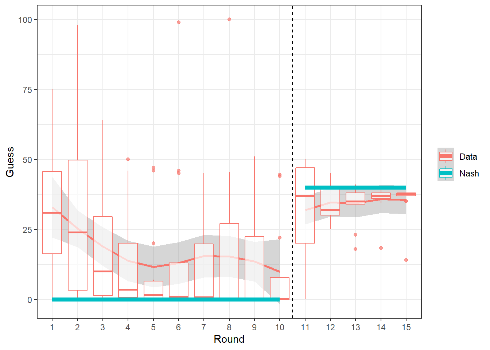
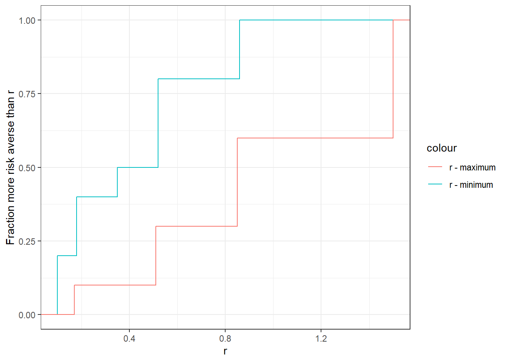

9 Risk
9.1 Questions
Calculate the expected value of each option, and the expected utility of each option, assuming that everyone have utility function \(u(x)=x^{0.2}\)
The certainty equivalent of a lottery is the dollar amount $C that a person would accept with certainty instead of the lottery itself. For example, if the lottery I hsve chosen is $1 with probability 50%, and $0 otherwise, then my certainty equivalent is defined as: \[ u(C)=0.5u(1)+0.5u(0) \] For our utility function \(u(x) =x^{0.2}\), we can solve for the certainty equivalent as follows: \[ \begin{aligned} C^{r}&=0.5\times 0^{r}+0.5\times 1^{r}\\ C&=\left(0.5\times 0^{r}+0.5\times 1^{r}\right)^{1/r}\\ \end{aligned} \] and so \(0.5^{1/0.2}=0.5^5\approx\$0.031\) Produce a plot with the expected value of each choice on the horizontal axis, and the certainty equivalent of each choice on the vertical axis. Incluse a \(45^\circ\) line (i.e. plot \(y=x\)), and explain the relationship between this line and the points that you have plot.
On a separate graph, plot the expected value of choice a (horizontal axis) against the expected value of choice b (vertical axis). Also plot the certainty equivalents. Add a \(45^\circ\) line. What does a point being above (or to the right of) this line mean?
4u. (undergrad students only) For each participant in the experiment, determine whether there decisions look more like maximizing \(E(X)\) or \(E(u(x))\). Report the fraction of subjects for each type. This is a deliberately vague question. Hint: Start by thinking about the predictions for each of these models.
4m. (masters students only) Estimate \(r\) for all participants in the experiment, where \(r\) is the parameter in the utility function \(u(x)=x^r\). Consider values for \(r\) in the range \((0.1,1.5)\)
9.2 Solutions
library(tidyr)
library(dplyr)
library(ggplot2)
# load the data
D<-data.frame(read.csv("PS03Data.csv"))
P<-data.frame(read.csv("PS03Parameters.csv"))
r<-0.2- Calculate the expected value of each option, and the expected utility of each option, assuming that everyone have utility function \(u(x)=x^{0.2}\)
P<-(P
%>% mutate(
EVA = Aprob1*Aprize1 + Aprob2*Aprize2 + Aprob3*Aprize3,
EVB = Bprob1*Bprize1 + Bprob2*Bprize2 + Bprob3*Bprize3,
EUA = Aprob1*Aprize1^r + Aprob2*Aprize2^r + Aprob3*Aprize3^r,
EUB = Bprob1*Bprize1^r + Bprob2*Bprize2^r + Bprob3*Bprize3^r)
)
knitr::kable(P %>% select(Problem.Number,EVA,EVB,EUA,EUB))| Problem.Number | EVA | EVB | EUA | EUB |
|---|---|---|---|---|
| 1 | 6.0271 | 5.2131 | 1.370060 | 1.382159 |
| 2 | 6.0246 | 5.2106 | 1.387890 | 1.386355 |
| 3 | 5.9825 | 5.1965 | 1.412532 | 1.389440 |
| 4 | 5.9906 | 5.2006 | 1.421095 | 1.390033 |
| 5 | 6.0010 | 5.1980 | 1.390030 | 1.386694 |
| 6 | 5.9970 | 5.2020 | 1.406269 | 1.384640 |
| 7 | 6.0010 | 5.1990 | 1.371318 | 1.390270 |
| 8 | 5.9970 | 5.1980 | 1.390377 | 1.389473 |
| 9 | 6.0000 | 5.2000 | 1.413830 | 1.389935 |
| 10 | 3.9500 | 3.6000 | 1.114477 | 1.290711 |
- The certainty equivalent of a lottery is the dollar amount $C that a person would accept with certainty instead of the lottery itself. For example, if the lottery I hsve chosen is $1 with probability 50%, and $0 otherwise, then my certainty equivalent is defined as: \[ u(C)=0.5u(1)+0.5u(0) \] For our utility function \(u(x) =x^{0.2}\), we can solve for the certainty equivalent as follows: \[ \begin{aligned} C^{r}&=0.5\times 0^{r}+0.5\times 1^{r}\\ C&=\left(0.5\times 0^{r}+0.5\times 1^{r}\right)^{1/r}\\ \end{aligned} \] and so \(0.5^{1/0.2}=0.5^5\approx\$0.031\) Produce a plot with the expected value of each choice on the horizontal axis, and the certainty equivalent of each choice on the vertical axis. Incluse a \(45^\circ\) line (i.e. plot \(y=x\)), and explain the relationship between this line and the points that you have plot.
| Problem.Number | CEA | CEB |
|---|---|---|
| 1 | 4.827237 | 5.044176 |
| 2 | 5.149624 | 5.121205 |
| 3 | 5.623295 | 5.178435 |
| 4 | 5.795820 | 5.189505 |
| 5 | 5.189448 | 5.127478 |
| 6 | 5.499745 | 5.089604 |
| 7 | 4.849430 | 5.193924 |
| 8 | 5.195927 | 5.179050 |
| 9 | 5.649178 | 5.187673 |
| 10 | 1.719315 | 3.582165 |
PlotThis<-P %>% select(Problem.Number,EVA,CEA)
colnames(PlotThis)<-c("Problem.Number","EV","CE")
PlotThis$choice="a"
tmp<-P %>% select(Problem.Number,EVB,CEB)
colnames(tmp)<-c("Problem.Number","EV","CE")
tmp$choice="b"
PlotThis<-rbind(PlotThis,tmp) %>% mutate(choice=paste0(choice,Problem.Number))
(
ggplot(PlotThis,aes(x=EV,y=CE,label=choice))
+geom_text()
+theme_bw()
+geom_abline(intercept=0,slope=1,color="red")
+xlab("Expected value ($)")
+ylab("Certainty equivalent ($)")
)
All of the points are below the \(45^\circ\) line. This is because we are modeling risk-averse preferences. That is if you are risk-averse, you would prefer the expected value to the lottery, so the certainty equivalent must necessarily be lower.
- On a separate graph, plot the expected value of choice a (horizontal axis) against the expected value of choice b (vertical axis). Also plot the certainty equivalents. Add a \(45^\circ\) line. What does a point being above (or to the right of) this line mean?
(
ggplot(data=P)
+geom_text(aes(x=CEA,y=CEB,label=paste(Problem.Number),color="Certainty Equivalent"))
+geom_text(aes(x=EVA,y=EVB,label=paste(Problem.Number),color="Expected Value"))
+geom_abline(intercept=0,slope=1)
+theme_bw()
+xlab("Choice a ($)")
+ylab("Choice b ($)")
)
4u. (undergrad students only) For each participant in the experiment, determine whether there decisions look more like maximizing \(E(X)\) or \(E(u(x))\). Report the fraction of subjects for each type. This is a deliberately vague question. Hint: Start by thinking about the predictions for each of these models.
# Determine the predictions
P<-(P
%>% mutate(EV_ChooseA = 1*(EVA>=EVB),EU_ChooseA = 1*(EUA>=EUB))
)
knitr::kable(P %>% select(Problem.Number,EV_ChooseA,EU_ChooseA))| Problem.Number | EV_ChooseA | EU_ChooseA |
|---|---|---|
| 1 | 1 | 0 |
| 2 | 1 | 1 |
| 3 | 1 | 1 |
| 4 | 1 | 1 |
| 5 | 1 | 1 |
| 6 | 1 | 1 |
| 7 | 1 | 0 |
| 8 | 1 | 1 |
| 9 | 1 | 1 |
| 10 | 1 | 0 |
## Merge the predictions into the data
D<-(D %>% left_join(P,by="Problem.Number")
%>% mutate(ChoseA = 1*(Decision=="a"))
)Here I will use a similarity index: I will evaluate the fraction of decisions a subject made that was consistent with each prediction.
Tab<-(D %>%group_by(ID)
%>% summarize(
fracEV=mean(1*(ChoseA==EV_ChooseA)),
fracEU=mean(1*(ChoseA==EU_ChooseA))
)
%>% mutate(EUtype=(fracEV<=fracEU))
)
knitr::kable(Tab)| ID | fracEV | fracEU | EUtype |
|---|---|---|---|
| 1 | 0.70 | 0.70 | TRUE |
| 2 | 0.55 | 0.75 | TRUE |
| 3 | 0.95 | 0.65 | FALSE |
| 4 | 0.90 | 0.60 | FALSE |
| 5 | 0.65 | 0.65 | TRUE |
| 6 | 0.80 | 0.70 | FALSE |
| 7 | 0.50 | 0.60 | TRUE |
| 8 | 0.40 | 0.50 | TRUE |
| 9 | 0.65 | 0.45 | FALSE |
| 10 | 1.00 | 1.00 | TRUE |
Which means that 40% of you behaved more like expected value-maximizers compared to expected utility-maximizers with utility function \(u(x)=x^{0.2}\).
4m. (masters students only) Estimate \(r\) for all participants in the experiment, where \(r\) is the parameter in the utility function \(u(x)=x^r\). Consider values for \(r\) in the range \((0.1,1.5)\)
rgrid<-seq(0.1,1.5,length=100)
pltData<-data.frame()
for (rr in rgrid) {
# predictions
Pr<-(P
%>% mutate(
EUA = Aprob1*Aprize1^rr + Aprob2*Aprize2^rr + Aprob3*Aprize3^rr,
EUB = Bprob1*Bprize1^rr + Bprob2*Bprize2^rr + Bprob3*Bprize3^rr)
%>% mutate(prediction=(1*EUA>=EUB))
)
Dr<- (D %>% select(ID,ChoseA,Problem.Number)
%>% left_join(Pr,by="Problem.Number")
%>% group_by(ID)
%>% summarize(frac=mean(1*(ChoseA==prediction)))
%>% mutate(r=rr)
)
pltData<-rbind(pltData,Dr)
}
GroupAverage<-pltData %>% group_by(r) %>% summarize(frac=mean(frac))
(ggplot(pltData,aes(x=r,y=frac,color=as.factor(ID)))
+geom_line()
+geom_line(data=GroupAverage,aes(x=r,y=frac),color="black",size=2)
+theme_bw()
+theme(legend.position="none")
+xlab("r")+ylab("Fraction of decisions consistent with r")
) Here the black line shows the average for the entire group, and each line shows the fraction of decisions consistent with \(r\) for each participant.
Here the black line shows the average for the entire group, and each line shows the fraction of decisions consistent with \(r\) for each participant.
Note that we can only pin \(r\) down to a range, so I am going to report the interval of \(r\) that returns this maximum fraction:
d<-(pltData
%>% group_by(ID)
%>% filter(frac==max(frac))
%>% summarize(rmin = min(r),rmax=max(r))
%>% select(ID,rmin,rmax)
%>% round(2)
)
knitr::kable(d)| ID | rmin | rmax |
|---|---|---|
| 1 | 0.35 | 0.51 |
| 2 | 0.10 | 0.17 |
| 3 | 0.86 | 1.50 |
| 4 | 0.86 | 1.50 |
| 5 | 0.52 | 0.85 |
| 6 | 0.52 | 0.85 |
| 7 | 0.18 | 0.85 |
| 8 | 0.10 | 0.51 |
| 9 | 0.52 | 1.50 |
| 10 | 0.18 | 1.50 |
(
ggplot()
+stat_ecdf(data=d,aes(x=rmin,color="r - minimum"))
+stat_ecdf(data=d,aes(x=rmax,color="r - maximum"))
+theme_bw()
+xlab("r")+ylab("Fraction more risk averse than r")
)